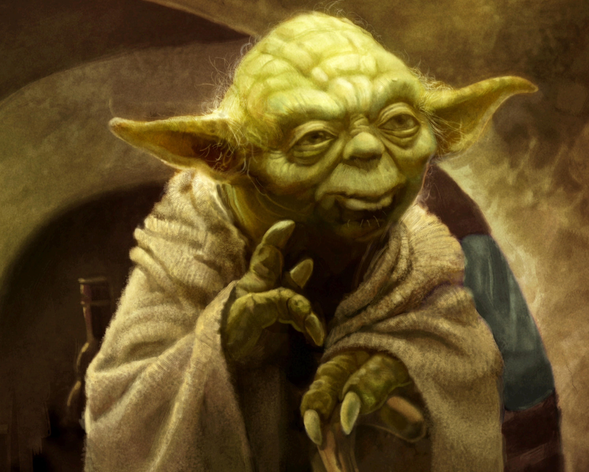

I totally backronymed CANDY to stand for the following:
Code
Algorithms
Nicely
Do
You
Say it like this guy and it should make more sense:

Well, my new job has me excited about coding again and I want to share that with you!
Every other week we pick a new coding problem to solve together. For maximum learnings, we give everyone a week to write their own solution for it in whatever language they want, then we post our solutions to the group. For the next week, we'll all talk about what we liked from other people's solutions, and how we can improve them - whether that's readability, patterns, efficiency, etc. etc.
There is a wide swath of talent levels in the group (from wide-eyed beginner to grisly veteran) and I hope that this is a learning experience for everyone, improving your own code and helping other people improve theirs.
Use your preferred language / editor to finish your candy.
If you don't have an IDE, try out these free online editors for your language of choice:
For an extra treat (see what I did there?), here is our official theme song: I want Candy